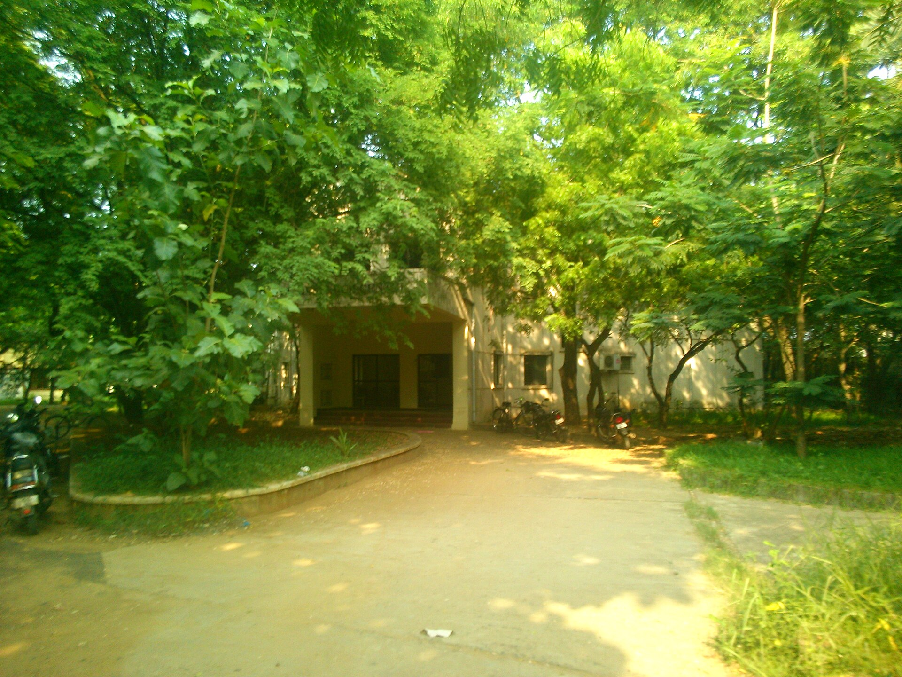
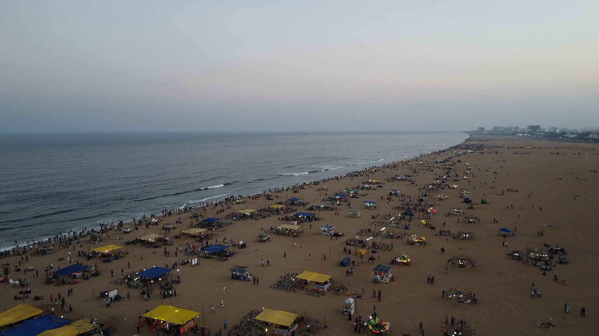

Pairing 9 of 11: Outfit + Crimson Pro


Address
Department of Production Technology, Madras Institute of Technology Campus, Anna University, Chennai 600 044, Tamil Nadu, India.
Getting there
The campus is in Chromepet, adjacent to Chrompet railway station on the Chennai suburban line.
To be announced The organisers will add airport and station transfers, and accommodation options.
About Chennai
